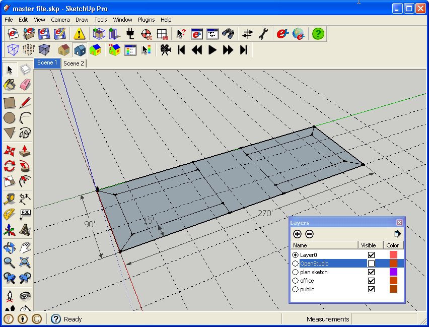
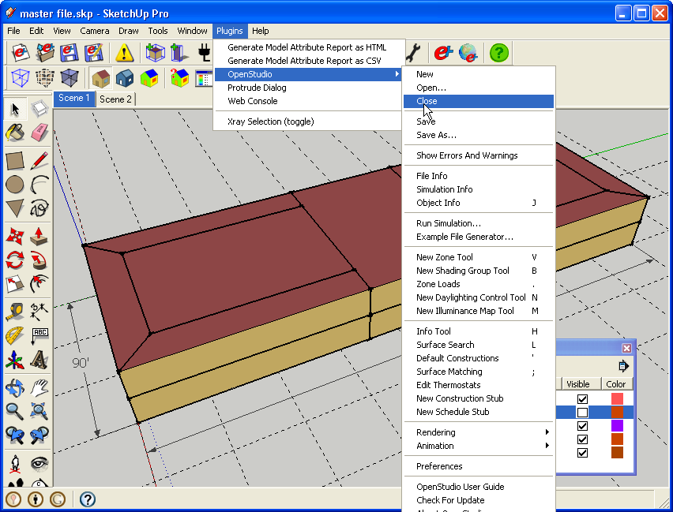
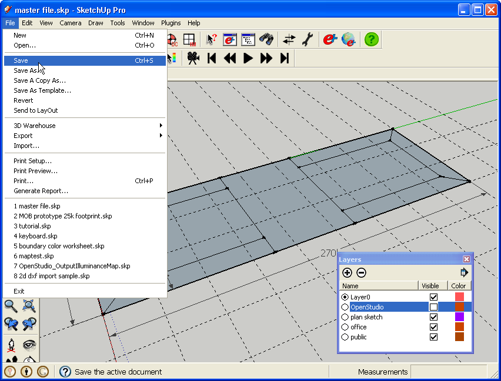
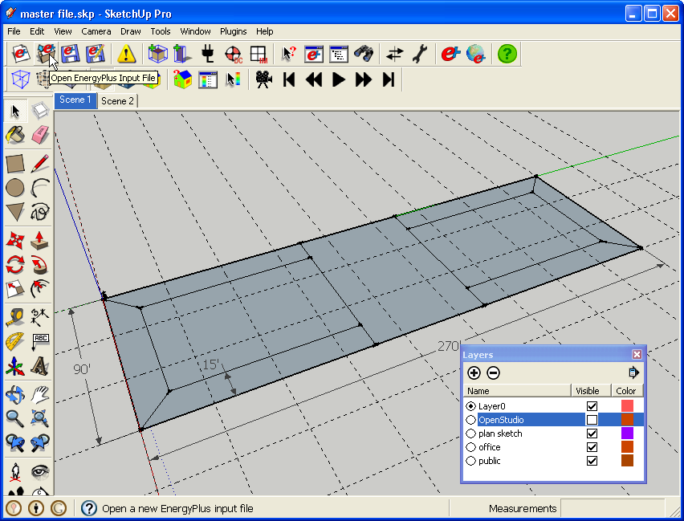
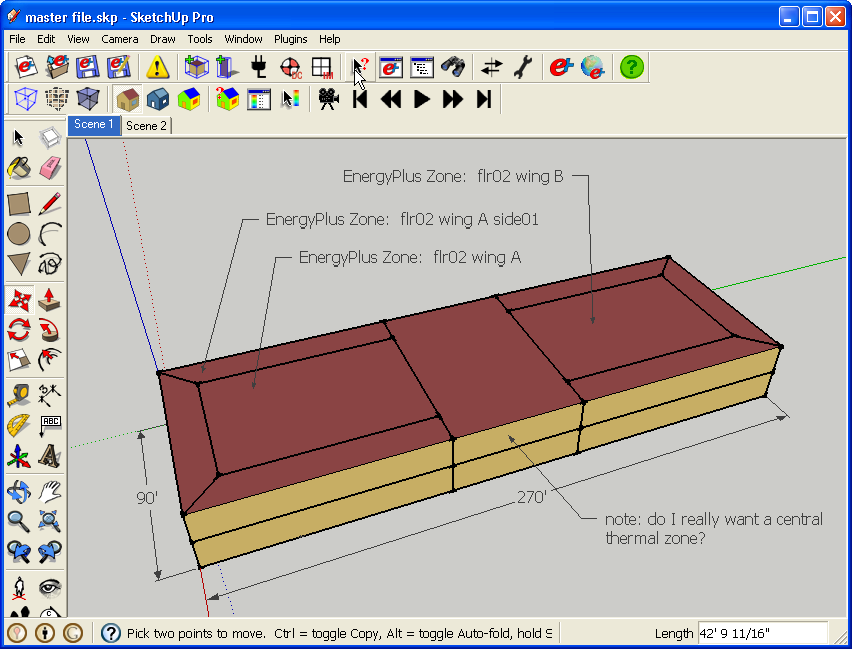

|
|
Work With SketchUp Content Alongside OpenStudio Content
- As mentioned elsewhere in the documentation, you don't want to save OpenStudio zones as part of a SketchUp file. But what do you do when you want to use SketchUp content alongside with OpenStudio content for more than your current session? Follow the workflow detailed below.
- Below you see some non-OpenStudio SketchUp content. This example has a floor print defining thermal zones, scenes, and layers. But it could contain trees, a site plan, or anything else.

(Credit: David Goldwasser/NREL)
- You can continue to draw SketchUp objects side by side with OpenStudio objects, but neither type of object should be nested inside of the other.
- When you are ready to quit SketchUp, you should follow these steps. Ensure that 'Always erase SketchUp entities when closing an input file' is unchecked under 'Plugins->OpenStudio->Preferences'.
- First, save your IDF file.

(Credit: David Goldwasser/NREL)
- Next close your IDF file under 'Plugins->OpenStudio->Close'.
- After closing the IDF file all of the Openstudio content will be removed from the SketchUp file.

(Credit: David Goldwasser/NREL)
- Save your SketchUp file as an skp file. There is no longer a link between this file and the IDF. Make sure you know where the files are saved so you can pair them together when needed.
- At this point you can close your SketchUp file and quit SketchUp.

(Credit: David Goldwasser/NREL)
- Below is what you see after you quit SketchUp and then re-open your SketchUp file.
- When you are ready to use OpenStudio then re-open your IDF file.
- Not only will the geometry be in sync, but your scenes and layers will be kept. If you had previously put some OpenStudio content onto specific layers, they won't re-import that way. You will have to place it there again.

(Credit: David Goldwasser/NREL)
- Below are some uses for this workflow.
- Work with contextual or architectural content alongside with the energy model.
- Keep base plans or elevations in the file. As the design changes, you can update the architectural content and make adjustments as necessary in the energy model. Base plans can have links to external content.
- You can attach labels to zones containing information for your reference, or to communicate with others who open your SketchUp file. When you re-import your IDF file the labels will still be in the correct position. However, it will not be glued to the object any more so if the object moves the label will not automatically move with it.

(Credit: David Goldwasser/NREL)
Back to Top
|
|
|